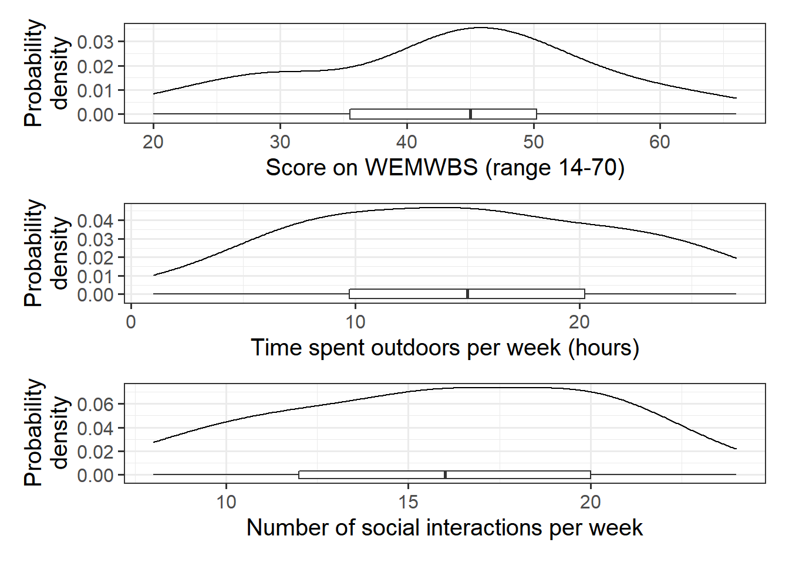
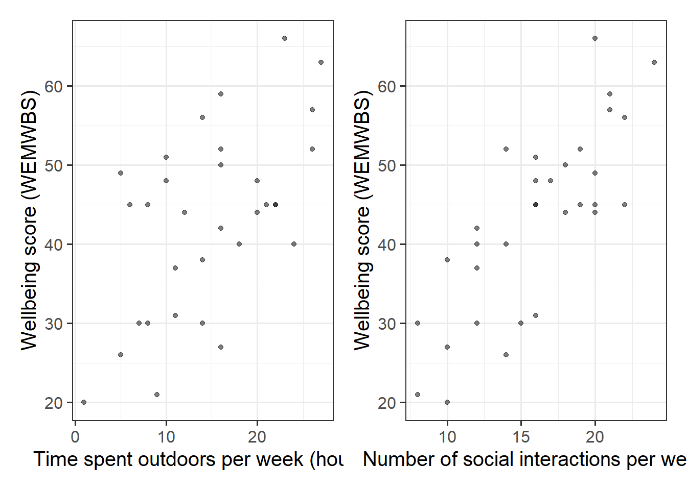
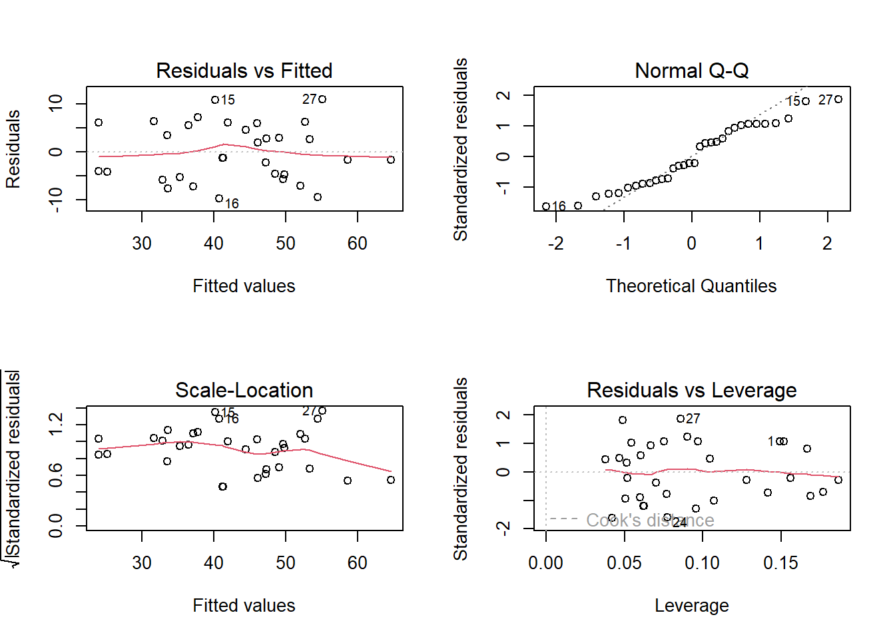
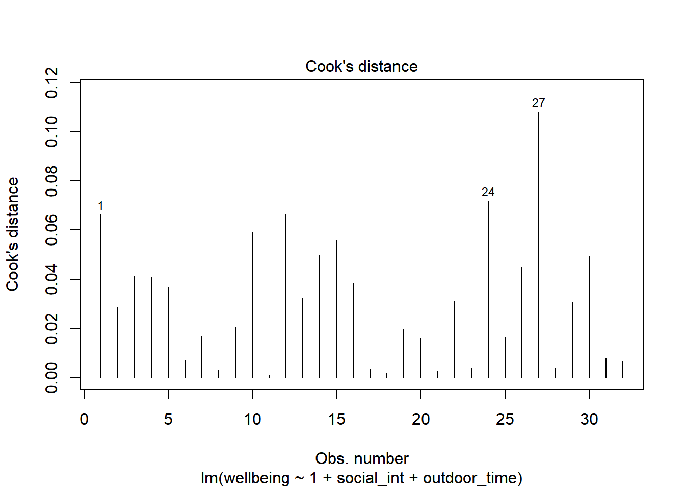
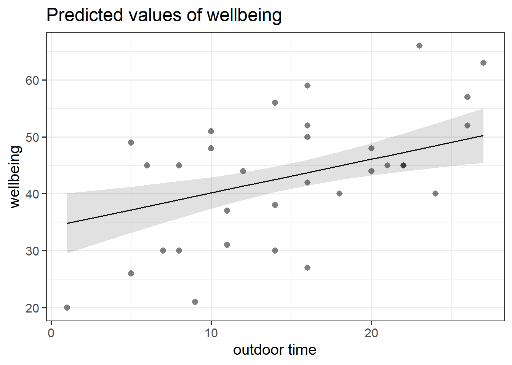

Research Question:after taking into account differences due to people’s level of social interactions, to what extent is well-being associated with the time people spend outdoors?
Data: wellbeing.csv
Researchers interviewed 32 participants, selected at random from the population of residents of Edinburgh & Lothians. They used the Warwick-Edinburgh Mental Wellbeing Scale (WEMWBS), a self-report measure of mental health and well-being. The scale is scored by summing responses to each item, with items answered on a 1 to 5 Likert scale. The minimum scale score is 14 and the maximum is 70.
The researchers also asked participants to estimate the average number of hours they spend outdoors each week, the average number of social interactions they have each week (whether on-line or in-person), and whether they believe that they stick to a routine throughout the week (Yes/No).
wellbeing: Warwick-Edinburgh Mental Wellbeing Scale (WEMWBS), a self-report measure of mental health and well-being. The scale is scored by summing responses to each item, with items answered on a 1 to 5 Likert scale. The minimum scale score is 14 and the maximum is 70.
outdoor_time: Self report estimated number of hours per week spent outdoors
social_int: Self report estimated number of social interactions per week (both online and in-person)
routine: Binary Yes/No response to the question “Do you follow a daily routine throughout the week?”
location: Location of primary residence (City, Suburb, Rural)
Question 1
Read in the data, and explore and describe the variables and relationships that are relevant to the research question.
Hints:
You might want to:
plot the marginal distributions (the distributions of each variable in the analysis without reference to the other variables)
plot the marginal relationships between the outcome variable and each of the explanatory variables.
make a quick correlation matrix of the variables which are to be used in the analysis, and write a short paragraph describing the relationships.
e.g. cor(data[,c(1:4)]) will give us a matrix of correlations between each pair of the first 4 variables in the data
library(tidyverse)library(patchwork) #used to arrange plotsmwdata <-read_csv("https://uoepsy.github.io/data/wellbeing.csv")wellbeing_plot <-ggplot(data = mwdata, aes(x = wellbeing)) +geom_density() +geom_boxplot(width =1/250) +labs(x ="Score on WEMWBS (range 14-70)", y ="Probability\ndensity")outdoortime_plot <-ggplot(data = mwdata, aes(x = outdoor_time)) +geom_density() +geom_boxplot(width =1/200) +labs(x ="Time spent outdoors per week (hours)", y ="Probability\ndensity")social_plot <-ggplot(data = mwdata, aes(x = social_int)) +geom_density() +geom_boxplot(width =1/150) +labs(x ="Number of social interactions per week", y ="Probability\ndensity")wellbeing_plot / outdoortime_plot / social_plot

Figure 1: Marginal distribution plots of wellbeing sores, weekly hours spent outdoors, and social interactions
The marginal distribution of scores on the WEMWBS is unimodal with a mean of approximately 43. There is variation in scores (SD = 11.7).
The marginal distribution of weekly hours spend outdoors is unimodal with a mean of approximately 14.8 hours. There is variation in outdoor time (SD = 6.9 hours).
The marginal distribution of numbers of social interactions per week is unimodal with a mean of approximately 16. There is variation in in numbers of social interactions per week (SD = 4.4).
wellbeing_outdoor <-ggplot(data = mwdata, aes(x = outdoor_time, y = wellbeing)) +geom_point(alpha =0.5) +labs(x ="Time spent outdoors per week (hours)", y ="Wellbeing score (WEMWBS)")wellbeing_social <-ggplot(data = mwdata, aes(x = social_int, y = wellbeing)) +geom_point(alpha =0.5) +labs(x ="Number of social interactions per week", y ="Wellbeing score (WEMWBS)")wellbeing_outdoor | wellbeing_social

Figure 2: Scatterplots displaying the relationships between scores on the WEMWBS and a) weekly outdoor time (hours), and b) weekly number of social interactions
We can either use:
# correlation matrix of the first 3 columnscor(mwdata[,1:3])
or:
# select only the columns we want by name, and pass this to cor()mwdata %>%select(wellbeing, outdoor_time, social_int) %>%cor()
There is a moderate, positive, linear relationship between weekly outdoor time and WEMWBS scores for the participants in the sample. Participants’ wellbeing scores tend to increase, on average, with the number of hours spent outdoors each week.
There is a moderate, positive, linear relationship between the weekly number of social interactions and WEMWBS scores for the participants in the sample. Participants’ wellbeing scores tend to increase, on average, with the weekly number of social interactions. There is also a weak positive correlation between weekly outdoor time and the weekly number of social interactions.
Question 2
Fit a regression model that you can use to answer the research question (make sure to give it a name to store it in your environment).
Call:
lm(formula = wellbeing ~ 1 + social_int + outdoor_time, data = mwdata)
Residuals:
Min 1Q Median 3Q Max
-9.742 -4.915 -1.255 5.628 10.936
Coefficients:
Estimate Std. Error t value Pr(>|t|)
(Intercept) 5.3704 4.3205 1.243 0.2238
social_int 1.8034 0.2691 6.702 2.37e-07 ***
outdoor_time 0.5924 0.1689 3.506 0.0015 **
---
Signif. codes: 0 '***' 0.001 '**' 0.01 '*' 0.05 '.' 0.1 ' ' 1
Residual standard error: 6.148 on 29 degrees of freedom
Multiple R-squared: 0.7404, Adjusted R-squared: 0.7224
F-statistic: 41.34 on 2 and 29 DF, p-value: 3.226e-09
\(\hat \beta_0\) = 5.37, the estimated average wellbeing score associated with zero hours of outdoor time and zero social interactions per week.
\(\hat \beta_1\) = 1.8, the estimated increase in average wellbeing score associated with an additional social interaction per week (an increase of one), holding weekly outdoor time constant (i.e., when the remaining explanatory variables are held at the same value or are fixed).
\(\hat \beta_2\) = 0.59, the estimated increase in average wellbeing score associated with one hour increase in weekly outdoor time, holding the number of social interactions constant.
Question 4
Along with the p-values given by summary() that test the null hypothesis that each coefficient is equal to zero, we can obtain confidence intervals for our estimates to provide a range of plausible values for each coefficient. This may be useful if we want to focus more on the estimated value, rather than “is it zero or not?”.
Look up the function confint() and use it to obtain some 95% Confidence Intervals for the coefficients.
The average wellbeing score for all those with zero hours of outdoor time and zero social interactions per week is between -3.47 and 14.21.
When holding weekly outdoor time constant, each increase of one social interaction per week is associated with a difference in wellbeing scores between 1.25 and 2.35, on average.
When holding the number of social interactions per week constant, each one hour increase in weekly outdoor time is associated with a difference in wellbeing scores between 0.25 and 0.94, on average.
Question 5
Does your model provide a better fit to the data than a model with no explanatory variables? (i.e., test against the alternative hypothesis that at least one of the explanatory variables significantly predicts wellbeing scores).
Hints:
it’s all in the summary()!!
summary(wbmodel)
Call:
lm(formula = wellbeing ~ 1 + social_int + outdoor_time, data = mwdata)
Residuals:
Min 1Q Median 3Q Max
-9.742 -4.915 -1.255 5.628 10.936
Coefficients:
Estimate Std. Error t value Pr(>|t|)
(Intercept) 5.3704 4.3205 1.243 0.2238
social_int 1.8034 0.2691 6.702 2.37e-07 ***
outdoor_time 0.5924 0.1689 3.506 0.0015 **
---
Signif. codes: 0 '***' 0.001 '**' 0.01 '*' 0.05 '.' 0.1 ' ' 1
Residual standard error: 6.148 on 29 degrees of freedom
Multiple R-squared: 0.7404, Adjusted R-squared: 0.7224
F-statistic: 41.34 on 2 and 29 DF, p-value: 3.226e-09
Weekly social interactions and outdoor time explained 72.2% of the variance (adjusted \(R^2\) =0.722, \(F\)(2,29)=41.3, p<.001)
Question 6
Just to prove it to ourselves, conduct a model comparison between your model and the “null model”, and check that the \(F\)-statistic from the summary() of your model matches that from the comparison.
Hints:
we talked about the ‘null model’, and conducting model comparison in 8A#model-comparisons.
we can fit a model with no predictors such as lm(wellbeing ~ 1, data = mwdata).
nullmodel <-lm(wellbeing ~1, data = mwdata)anova(nullmodel, wbmodel)
Analysis of Variance Table
Model 1: wellbeing ~ 1
Model 2: wellbeing ~ 1 + social_int + outdoor_time
Res.Df RSS Df Sum of Sq F Pr(>F)
1 31 4222.0
2 29 1096.2 2 3125.8 41.345 3.226e-09 ***
---
Signif. codes: 0 '***' 0.001 '**' 0.01 '*' 0.05 '.' 0.1 ' ' 1
Matches that seen in the bottom of summary(wbmodel):
F-statistic: 41.34 on 2 and 29 DF, p-value: 3.226e-09
You don’t necessarily have to perform statistical tests of assumptions, but check the plots at the very least!
We only have \(n=32\) observations here, so our plots might look a bit wobbly. I might perform some quick tests to reassure myself we’re okay.
plot(wbmodel)

shapiro.test(residuals(wbmodel))
Shapiro-Wilk normality test
data: residuals(wbmodel)
W = 0.94831, p-value = 0.129
library(car)ncvTest(wbmodel)
Non-constant Variance Score Test
Variance formula: ~ fitted.values
Chisquare = 0.001925809, Df = 1, p = 0.965
We seem to be okay!
Question 8
Check for influential observations.
Hints:
8B#individual-case-diagnostics covers a whole load of different metrics you might use. As a starting point, perhaps consider Cook’s Distances plots, or use influence.measures() to get lots of info.
Here are the Cook’s Distance values:
plot(wbmodel, which =4)

We can see that one observation (labelled 27) is a little bit higher than the rest. It’s not hugely out of keeping with the others, so I might not be too worried.
It’s not flagged by influence.measures(), but another observation is flagged, this time on the covratio metric (influence on the standard errors).
With only \(32\) observations, excluding datapoints comes with a big reduction in statistical power. On balance I might report this influential point in the write up, but keep it in the analysis. This decision is also based on the distribution of covratio values - it doesn’t look like one value is really that much higher than the others (it is simply above the internal cutoff that influence.measures() uses).
to visualise just one association, you might need the terms argument in plot_model(). Don’t forget you can look up the documentation by typing ?plot_model in the console.
library(sjPlot)plot_model(wbmodel, type ="eff",terms =c("outdoor_time"), show.data =TRUE)

Question 10
Create a regression table to present your results
Hints:
There is a useful function called tab_model(), also from the sjPlot package. You can see it used in 7A#example.
tab_model(wbmodel)
wellbeing
Predictors
Estimates
CI
p
(Intercept)
5.37
-3.47 – 14.21
0.224
social int
1.80
1.25 – 2.35
<0.001
outdoor time
0.59
0.25 – 0.94
0.001
Observations
32
R2 / R2 adjusted
0.740 / 0.722
Rmd
Question 11
Let’s put this all together.
Create an rmarkdown file that:
Reads in data and fits the model
Describes the research question and the analytical method used to address it
Presents and interprets the results
Hints:
You’ve actually done all of this already in the earlier questions, it’s just a matter of shoving it in the .Rmd file and tidying it up.